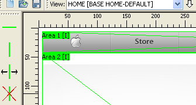

Now select the menu Data -> Files. On this screen, click Add, and select the site image file. You may want to give the image a name to better identify it later, to do this, select the added file, and click Edit.
Click close to close this screen.
Now we need to create a "Mask". A mask is a collection of areas (or slices), that can be re-utilized in more than one image, so pages that follow a pattern can use the same mask to save in slicing time.
Select the menu Data -> Mask, click Add, enter a name (for example, BASE HOME), and a width and height. Normally these sizes will be the same as the image size, so for this image you enter 996 and 800. Leave the config part as the default.
Click close to close this screen.
The next step is to create a "View". A View normally translates to one web page, it is where you join a file with a mask, and add HTML attributes.
Select the menu Data -> View, and click Add. Give the view a name, select the file and mask added on the previous steps, and click Ok, then Close.
Now that we have a view, we can start slicing.
On the application main screen, select the newly created view on the "View" selection list on the toolbar. This is your work area.
First, we need to adjust the left and right margins. On this site, the layout is pixel-fixed size, centered on the screen. We don't want the image to contain the borders of the image so we can move the left and right border lines to cut them out.
To do this, click on the "Move line" botton at the left toolbar, select the leftmost vertical line, and move it to cut out the blank space. Do the same for the other side.
Using this method is difficult to do precise positioning, so there is a more precise tool to do this kind of fine adjustment. To use it, right click inside the area (slice), select "Area 1", then "Position and Size".
With this tool you can do precise alignment, and the preview window helps to visualize if they are really right.
The "Position" item controls the pixel position of each of the 4 lines that make this area. Change their value to move the lines and the area's borders.
The "Movement" item moves the entire area to the specified position, effectivelly it moves the 2 lines of the orientation at the same time.
The "Size" item changes the area size. It will try to grow to the right/bottom if possible, if not, it will grow from left/top. Right-clicking on the image, you have many viewing options, like zooming or repeating the image, that can help with the positioning.
This screen have many other advanced uses, you can learn more about it on other tutorials.
Now we will slice the mask to create areas. We do this by creating lines, and these lines will make the areas. A line must always be connected to 2 other lines.
To add a horizontal line, click on the "Insert Horizontal Line" button on the toolbar at the left side of de screen. Now click the left vertical line on the view, and move over to the right vertical line. You don't need to keep the mouse button held, just click on one line, then on the other one. As a shortcut, you can click the middle mouse button (the scrollwhell button) to automatically select the outermost compatible line, in this case it will be the right line. Create an area around the menu.

Now create another area for the blank area between the menu and the big MacBook banner. Do this for all basic areas of the page. Use the "Position and Size" screen to fine-tune the areas. Note that when the area is too small, its name may not appear on the screen. Hovering the mouse over it you can see its name on the status bar.
We don't want the blank areas to be images, as they are plain white. We do this setting a kind for the area. There are 3 kinds of areas: IMAGE, MASK, and NONE. In this case, we will be selecting NONE for the blank areas, so they will not generate an image, just a blank table cell.
Right-click on each blank area, select Kind -> None.
Our page background is white by default, so we don't need to select an area color. If it was a different color, we could select it on the area's "Properties" menu.
Let's slice the 4 product areas at the bottom now. If you used other tools to slice, you know that a big limitation of them is that they can only create a single table for the full page layout. This is good for static designs, but terrible when you need to integrate it with dynamic content from programming languages such as ASP and PHP.
One unique feature of HTMLBUtcher is that it can create multiple nested tables inside areas, to organize better the generated HTML code and allow it to maintain the design even if you change the text and images. There is no set limit to the amount of nested areas you can create inside each order, use them to the best of your design.
To use this feature, set the area containing the 4 products to kind MASK.
When you do this, this area will contain another independent set of inner areas. The area title reflects this by adding another area name below the main area name.
This area can now the sliced independently of the main design table, creating a new table inside this cell. Let's slice the white areas like we did for the main design.
Select the "Insert Vertical Line" button on the toolbar at left, and click at the horizontal line at the top of this area. When you click it, a popup menu will appear.
This menu asks which line you want to select to insert the new line. If you select the main design table, you will be dividing the main layout. As we want to divide the sub-area, we select the line that is contained in it, in this case the second one. BEWARE: if you select the wrong line, it may appear to work, but in fact you will be cutting the main layout and not the subarea.
Now select the area bottom line. Note that the popup menu will not appear in this case, because the program already knows in which area we are inserting a line. Clicking on it will slice the subarea. Do the same for all other items, and set the blank areas as kind NONE.
Now let's work on the menu at the top. First, lets change the image format, as JPEG does not suit this image very well. Let's make it PNG like on the original site. To do this, enter the area's popup menu, and select Image Formats -> PNG.
We can do it in many ways, the 2 more common would be to slice it like we did for the product area, or use an image map. Let's use an image map to see how it works.
Image maps cannot cross areas border, it can be contained only in a single area. Click on the "Insert Map Area" button on the left toolbar, and make a box around the Apple logo on the main menu.

The brown rectangle denotes a map area, that is, when generating the HTML file, an image map pointing to this image position will be created, and can be used to put the menu links. To enter the URL, select the popup menu "Properties" for this area. Do the same for the other buttons.
If we wanted to do the menu mouse-over like on the real site, we would need to use another technique, see the other tutorials to learn how to do this.
The search area of the menu too will not be done in this tutorial, see the other tutorials for ways to do it.
For the "News" area, the easiest way to do is to use an image program to remove the text inside the area, painting over it with the background color, and setting the area as a background image (selecting "Background Image" on the area's popup menu).
The other way would be to create a sub-mask inside this area, and cut the borders as images and leave the middle as plain html, reducing even more the page size. This method is explained in another advanced tutorial.
We can now center the site on the screen using a table around it. To do it, select the menu Data -> Current View. Click the HTML tab, and on the "Body Prepend" field enter:
<table width="100%"> <tr><td align="center">
and on the "Body Append" field:
</td></tr> </table>
This will insert this code before and after the main generated table.
Now generate the HTML, using the menu File -> Save for Web.